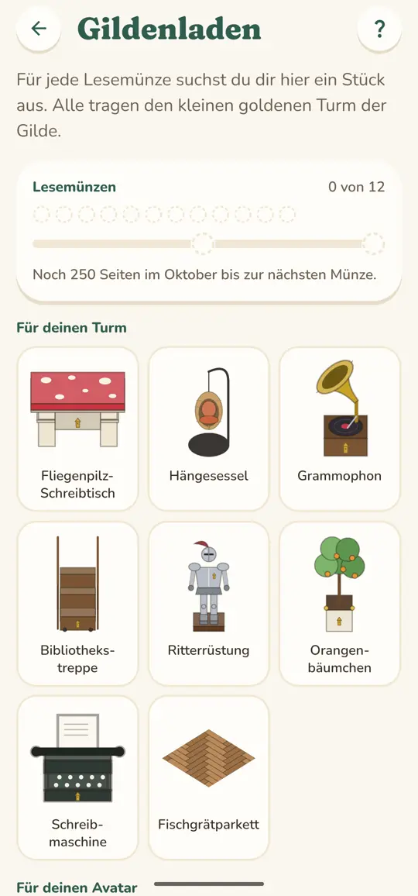
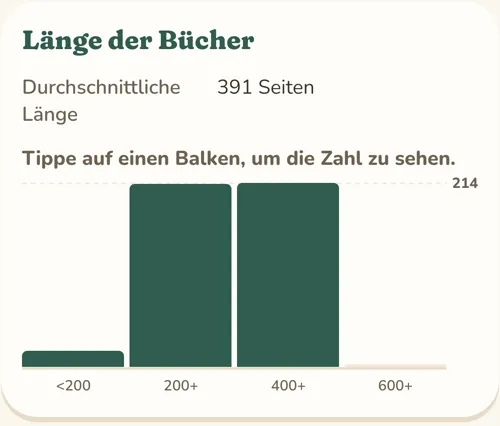

Ein Banner für deinen Turm
Am Dach deines Turms weht das weinrote Gildenbanner, zwei weitere hängen neben der Tür, und in deinem Profil steht deine Initiale auf Gold. Ob deine Freund*innen das sehen, entscheidest du.
Bookspire Gilde
Als Mitglied der Gilde richtest du jede Etage deines Turms ein, tauschst deine Lesemünzen gegen besondere Stücke und erfährst in der Gildenstatistik, wie du eigentlich liest.
Die Gilde öffnet mit dem Start im App Store und bei Google Play.

Über dem Erdgeschoss schlafen die Etagen deines Turms, bis du sie als Mitglied der Gilde weckst. Dann bekommt jede ihr eigenes Gesicht: im ersten Stock vielleicht Sternenstein und ein roter Ohrensessel, darüber Moosstein und ein heller Birkenboden. So wird aus deinem Turm ein Haus mit vielen Zimmern.

Im Gildenladen tauschst du jede Lesemünze gegen ein Stück deiner Wahl, etwa einen Hängesessel, in dem man mit einem Buch verschwinden kann, ein Grammophon oder eine Tasse Tee für deinen Avatar. Jeden Monat kommen zwei neue dazu, keins verschwindet wieder, und was du eingetauscht hast, gehört dir für immer.
Die Münzen bekommst du für je 250 Seiten, die du in einem Monat erfasst, höchstens zwei im Monat. Kaufen kann man sie nicht.

Die Gildenstatistik verrät dir, wie viele Tage du für ein Buch brauchst, an welchen Wochentagen du am meisten liest, welches Genre du am besten bewertest und auf welcher Seite du ein Buch im Schnitt weglegst, wenn es dich nicht hält. Und sie stellt dein Jahr neben das letzte.

Am Dach deines Turms weht das weinrote Gildenbanner, zwei weitere hängen neben der Tür, und in deinem Profil steht deine Initiale auf Gold. Ob deine Freund*innen das sehen, entscheidest du.
Mittags erfasst du auf dem Handy, abends auf dem Tablet, und beide sind auf demselben Stand, denn als Mitglied werden all deine Geräte zugleich synchronisiert.
Endet deine Mitgliedschaft, ruhen die oberen Etagen so, wie du sie eingerichtet hast. Deine Gildenstücke bleiben dir.
Etagen, Freischaltungen und Lesemünzen gibt es für Bücher und Seiten, nie für Geld.
Es gibt keinen Countdown, keine Stücke auf Zeit und kein Angebot, das beim Öffnen der App aufspringt.
Bibliothek, Statistik und Export bleiben für alle frei. Deine Bücher nimmst du jederzeit mit.
Den Preis nennen wir zum Start. Es wird ein Monats- und ein günstigeres Jahresabo geben, und du kannst die Gilde vorher kostenlos ausprobieren.
Mit dem Start im App Store und bei Google Play. Trag dich in die Warteliste ein, dann schreiben wir dir, sobald es so weit ist.
Sie sammeln sich trotzdem in deinem Beutel und warten dort. Trittst du später bei, tauschst du sie sofort ein.
Deine oberen Etagen ruhen so, wie du sie eingerichtet hast, und deine Gildenstücke bleiben dir. Die Gildenstatistik wird wieder zur Vorschau, synchronisiert wird ein Gerät, und Lesemünzen sammelst du weiter. Trittst du wieder bei, ist alles sofort zurück.
Jederzeit in den Abo-Einstellungen des App Store oder von Google Play. Die Mitgliedschaft läuft bis zum Ende des Zeitraums, den du schon bezahlt hast.
Für deinen Turm ja, jedes gelesene Buch füllt die Regale. Lesemünzen gibt es nur für Seiten, die du ab dem Start der Gilde in Bookspire erfasst.
Für die Gilde ja, damit deine Mitgliedschaft auf all deinen Geräten gilt. Bookspire selbst funktioniert auch ohne Konto.
Ja, an einem kleinen Zeichen neben deinem Namen und an „In der Gilde“, wenn sie deinen Turm besuchen. Ausschalten kannst du das im Profil unter „Konto & Privatsphäre“.
Trag dich in die Warteliste ein, dann erfährst du als Erstes, wann es losgeht, und bekommst zum Start das Set „Erste Seite“.
Zur Warteliste